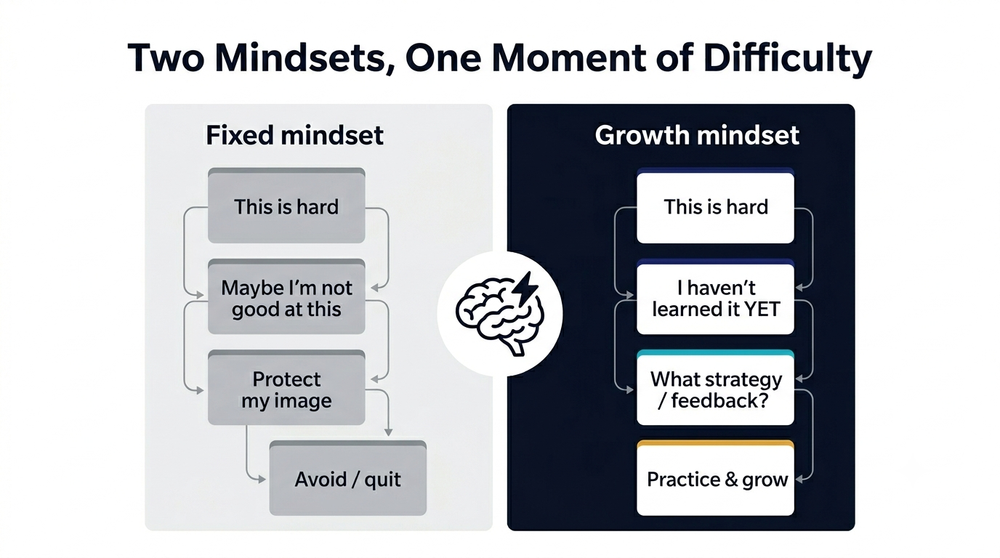
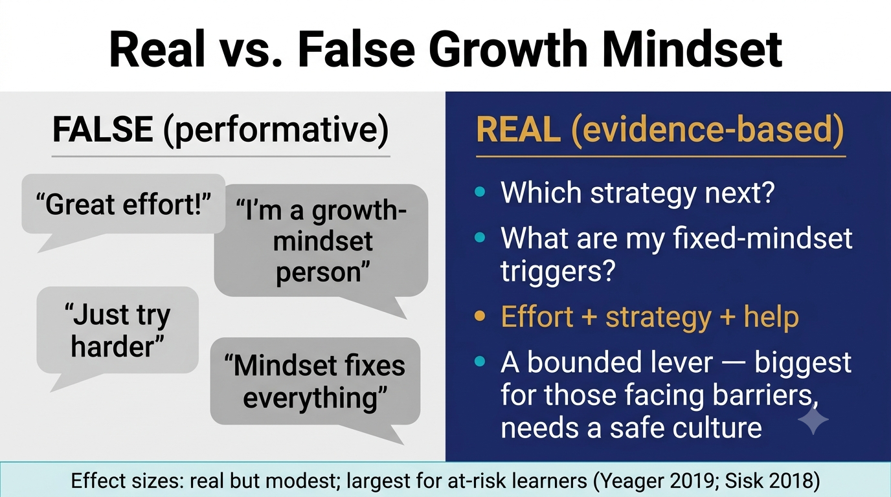
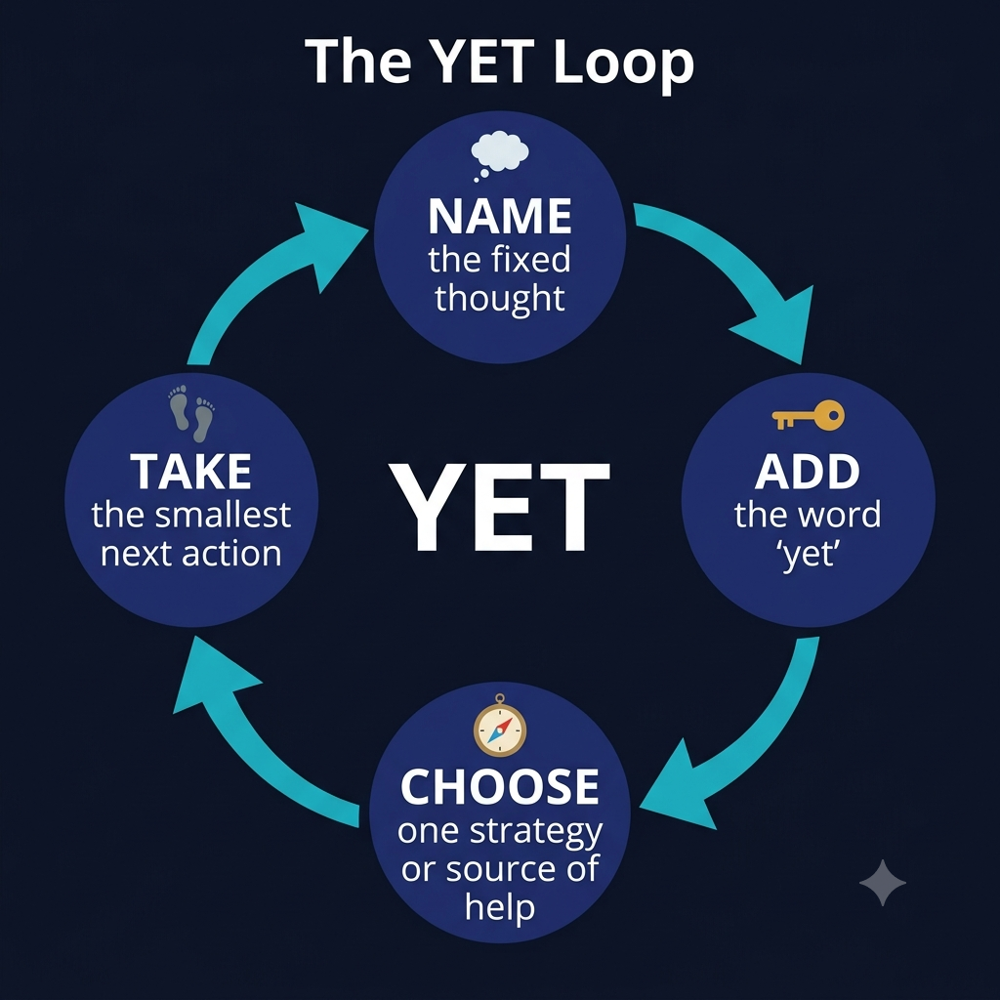
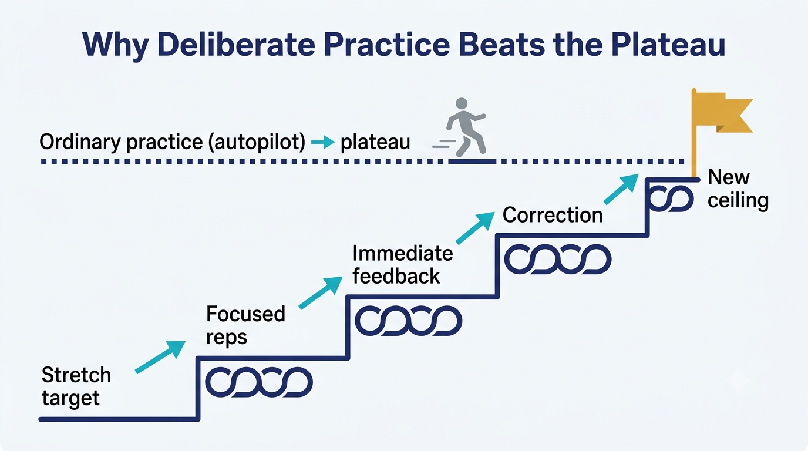
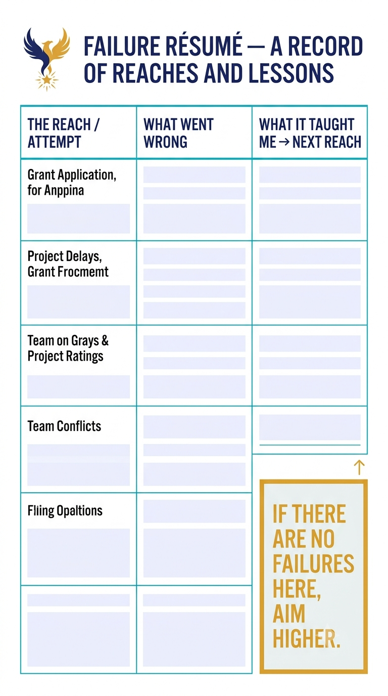
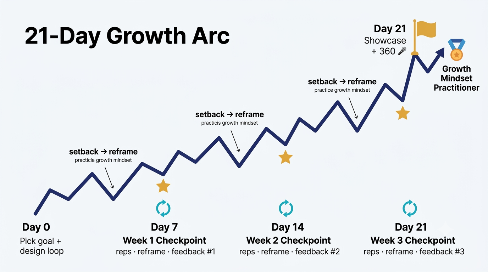

🌱 Worked Example — Growth Mindset Micro-Credential (full course)
A complete, ready-to-run ADA micro-credential about Growth Mindset, built end-to-end with the ADA Methodology (KSA + 4 phases + learning-atom topology). It is a fully populated example: every atom contains real reading text, curated video links, image-generation prompts for diagrams, practice labs, and rubrics.
🖥️ See it live: open course.html in any browser for an interactive, navigable version of this course (sidebar, phase progress, embedded videos, diagrams).
Conforms to ../../specs/micro-credential-v2-schema.md · modalities from ../../specs/learning-atom-topology.md · KSA from ../../specs/ksa-taxonomy.md.
🧭 What this teaches
Growth Mindset — the belief that abilities can be developed through effort, strategy, and help from others — is one of the durable Abilities that employers list most often ("learning agility", "coachable", "thrives on feedback", "growth mindset") yet rarely train on purpose. This course makes it trainable and certifiable: it gives learners the science, a concrete reframing Skill, deliberate-practice reps, and then builds the Ability through authentic, repeated exposure to challenge — assessed with a behavioral rubric + reflection + peer 360, never a single quiz.
| Title | Growth Mindset for High-Performing Professionals |
| Duration | ~16 hours · 3–4 weeks |
| Primary KSA | 🌱 Ability — Growth Mindset (treat failure as learning, seek challenge & feedback) |
| Target competency | O*NET Work Styles (Adaptability, Persistence, Achievement/Effort) · ESCO transversal attitudes · SFIA LEDA (learning & development) |
| Badge | 🏅 Growth Mindset Practitioner |
📚 Course contents
| # | File | What it is |
|---|---|---|
| — | micro-credential.md | The full micro-credential spec (YAML schema, objectives, KSA map, phase planner) |
| 1 | atoms/atom-1-science-of-mindset.md | 🙉 P1 · 🧠 K — The science of mindset (readings + Dweck TED + quiz) |
| 2 | atoms/atom-2-myths-and-nuance.md | 🙈 P2 · 🧠 K — Myths & nuance: false growth mindset (evidence + cases) |
| 3 | atoms/atom-3-power-of-yet.md | 🙈 P2 · 🛠️ S — The Power of Yet reframing protocol |
| 4 | atoms/atom-4-deliberate-practice-lab.md | 🙊 P3 · 🛠️ S — Deliberate-practice lab |
| 5 | atoms/atom-5-failure-resume-feedback.md | 🙊 P3 → 🐵 P4 · 🌱 A — Failure résumé & feedback seeking |
| 6 | atoms/atom-6-growth-in-the-wild-capstone.md | 🐵 P4 · 🌱 A — Growth in the wild (21-day challenge) |
| — | capstone.md | Capstone brief + how it maps to KSA |
| — | rubrics.md | All rubrics (knowledge-mini, skill, behavioral, capstone-5) |
| — | skills-map.md | Badge → skills map and how it closes a job-match gap |
🔄 Phase journey
🤖 How it was authored (and how to reuse it)
This course follows the Gen AI authoring workflow in ../../specs/genai-authoring-workflow.md: job competency → KSA → atoms → modalities → rubrics → badge. Two conventions used throughout:
- 🎬 Videos are written as a
youtubeblock with the real URL + a caption, so the text
file is self-describing (and the interactive site embeds them as a player).
- 🖼️ Diagrams/images include a reusable image-generation prompt in a
promptblock —
feed it to any image model to produce the asset on brand.
⚠️ Human-in-the-loop (methodology guardrail): the external links, reports, and citations below are curated starting points. A mentor/employer should verify each link, licensing, and currency before delivery — AI-suggested sources are never authoritative on their own. See ../../CLAUDE.md §5.🎓 Micro-Credential — Growth Mindset for High-Performing Professionals
The full specification for this micro-credential. It conforms to ../../specs/micro-credential-v2-schema.md.
YAML front matter
yamlschema: ada-microcredential/v2
id: mc-growth-mindset-pro
title: "Growth Mindset for High-Performing Professionals"
language: en
duration_hours: 16
status: published
license: CC-BY-SA-4.0
mentors: ["@sancarbar"]
target_roles:
- role: "Any role in a fast-changing, learning-intensive digital team"
framework_ref: >
O*NET Work Styles: Adaptability/Flexibility, Persistence, Achievement/Effort ·
ESCO transversal attitudes (maintaining a growth mindset, coping with uncertainty) ·
SFIA: LEDA (learning & development), behavioural factors (autonomy, complexity)
ksa:
- { id: K-mindset-science, type: knowledge, label: "Fixed vs. growth mindset; neuroplasticity; what research does and doesn't claim", target_level: 1, bloom: understand }
- { id: K-mindset-nuance, type: knowledge, label: "False growth mindset; effect-size nuance; when mindset matters most", target_level: 1, bloom: understand }
- { id: S-yet-reframe, type: skill, label: "Apply a 'power of yet' reframing move to a real setback", target_level: 2, bloom: apply }
- { id: S-deliberate-practice, type: skill, label: "Design and run a deliberate-practice loop with feedback", target_level: 2, bloom: apply }
- { id: A-growth-mindset, type: ability, label: "Treat failure as learning; seek challenge & feedback; persist", target_level: 3, primary: true, affective_stage: organize, assessed_occasions: 5 }
- { id: A-adaptability, type: ability, label: "Stay effective and keep learning amid change/ambiguity", target_level: 2, affective_stage: value, assessed_occasions: 3 }
atoms:
- { id: atom-1, title: "The science of mindset", ksa_refs: [K-mindset-science], phase: 1, modalities: [{dimension: read, subtype: Article}, {dimension: watch, subtype: Video Explainer}, {dimension: see, subtype: Infographic}, {dimension: evaluate, subtype: Pop Quiz}], rubric: knowledge-mini }
- { id: atom-2, title: "Myths & nuance", ksa_refs: [K-mindset-science, K-mindset-nuance], phase: 2, modalities: [{dimension: read, subtype: Scientific Paper}, {dimension: read, subtype: Case Study}, {dimension: watch, subtype: Short}, {dimension: evaluate, subtype: AI QA Check}], rubric: knowledge-mini }
- { id: atom-3, title: "The power of yet", ksa_refs: [S-yet-reframe, A-growth-mindset], phase: 2, modalities: [{dimension: see, subtype: Mental Model}, {dimension: watch, subtype: Tutorial / Screencast}, {dimension: practice, subtype: Worksheet / Exercise}, {dimension: evaluate, subtype: Mini-Rubric}], rubric: skill }
- { id: atom-4, title: "Deliberate-practice lab", ksa_refs: [S-deliberate-practice, A-growth-mindset], phase: 3, modalities: [{dimension: read, subtype: Technical Article}, {dimension: practice, subtype: Lab}, {dimension: collaborate, subtype: Pair Programming}, {dimension: evaluate, subtype: Performance Task}], rubric: skill }
- { id: atom-5, title: "Failure résumé & feedback seeking", ksa_refs: [A-growth-mindset, A-adaptability], phase: 3, modalities: [{dimension: practice, subtype: Project Task}, {dimension: collaborate, subtype: Study Group}, {dimension: evaluate, subtype: Behavioral Assessment}], rubric: ability-behavioral }
- { id: atom-6, title: "Growth in the wild (21-day challenge)", ksa_refs: [A-growth-mindset, A-adaptability], phase: 4, modalities: [{dimension: practice, subtype: Project Task}, {dimension: read, subtype: Journal / Diary}, {dimension: collaborate, subtype: Showcase / Demo Day}, {dimension: evaluate, subtype: Behavioral Assessment}], rubric: ability-behavioral }
capstone:
title: "Growth in the wild — a 21-day stretch challenge"
integrates_ksa: [K-mindset-science, K-mindset-nuance, S-yet-reframe, S-deliberate-practice, A-growth-mindset, A-adaptability]
rubric: capstone-5
badge:
name: "Growth Mindset Practitioner"
evidence_required: ["atom-3", "atom-4", "atom-5", "capstone"]
issued_on: verified-evidence
🎯 Target job competency
Keep learning and stay effective when goals, tools, or feedback are hard — written in postings as growth mindset, learning agility, coachable, resilient, thrives on feedback. Mapped to O*NET Work Styles (Adaptability/Flexibility, Persistence, Achievement/Effort), ESCO transversal attitudes, and SFIA behavioural factors + LEDA.
🧬 KSA breakdown — an attitude made trainable
| KSA | Component | Why this type | Target |
|---|---|---|---|
| 🧠 Knowledge | Mindset science (fixed vs. growth, neuroplasticity) | Concepts to understand — a small enabling base | L1 |
| 🧠 Knowledge | Myths & nuance (false growth mindset, effect sizes) | Prevents shallow / performative adoption | L1 |
| 🛠️ Skill | The power of yet reframing move | A concrete, repeatable move you can practice | L2 |
| 🛠️ Skill | Deliberate-practice loop with feedback | A teachable method that operationalizes the mindset | L2 |
| 🌱 Ability | Growth mindset (failure = learning) | A disposition proven by behavior over time | L3 |
| 🌱 Ability | Adaptability amid change | Cross-cutting disposition, reinforced throughout | L2 |
Why this shape: you can't lecture an attitude into existence. v2 gives a light Knowledge base, two concrete Skills the learner can actually do, and then grows the Ability through repeated, authentic challenge — because dispositions are evidenced by behavior across occasions, not by a test.
📘 Learning objectives (Bloom + Affective + KSA)
| Objective | Bloom / Affective | KSA | Component | Target |
|---|---|---|---|---|
| Explain fixed vs. growth mindset and the neuroscience behind it | Understand | 🧠 K | K-mindset-science | L1 |
| Distinguish real growth mindset from false growth mindset | Understand / Analyze | 🧠 K | K-mindset-nuance | L1 |
| Apply a power of yet reframing move to a live setback | Apply | 🛠️ S | S-yet-reframe | L2 |
| Design and run a deliberate-practice loop with feedback | Apply / Create | 🛠️ S | S-deliberate-practice | L2 |
| Treat failure as data; seek challenge and feedback; persist | Organize (affective) | 🌱 A | A-growth-mindset | L3 |
| Stay effective and keep learning when conditions change | Value (affective) | 🌱 A | A-adaptability | L2 |
🔍 Phase planner
| Phase | Atom(s) | KSA focus | Activity | Assessment |
|---|---|---|---|---|
| 🙉 1 · hear | Atom 1 | 🧠 K | mindset readings + Dweck TED + infographic | knowledge-mini (pop quiz) |
| 🙈 2 · see | Atom 2, Atom 3 | 🧠 K → 🛠️ S | evidence + cases; learn the yet reframe | knowledge-mini + skill mini-rubric |
| 🙊 3 · do | Atom 4, Atom 5 | 🛠️ S + 🌱 A | deliberate-practice lab; failure résumé | performance + behavioral |
| 🐵 4 · share | Atom 6 (capstone) | 🌱 A | 21-day challenge + journal + peer 360 + showcase | behavioral + capstone-5 |
🚀 Capstone & 📊 assessment
Full brief in capstone.md; all rubrics in rubrics.md. In short: formative checks per atom, a behavioral rubric across 5 occasions, and a capstone graded on the standard 5-criteria rubric. The badge → skills-map mapping is in skills-map.md.
🎓 Outcomes & recognition
- Conceptual mastery of mindset science and its limits (no hype).
- Two job-ready moves: a reframing technique and a deliberate-practice loop.
- A portfolio artifact (21-day growth log + showcase) proving the Ability.
- LinkedIn-compatible digital badge: 🏅 Growth Mindset Practitioner.
⚛ Learning Atom 1 — The Science of Mindset
Phase: 🙉 1 · Self-Guided Introduction (hear) · KSA: 🧠 Knowledge · Target level: L1 · Component id: K-mindset-science
🎯 Learning objective
- Explain the difference between a fixed and a growth mindset, and describe the
neuroscience (neuroplasticity) that makes "abilities can grow" literally true.
🧩 Prerequisites
- None. Curiosity and a recent example of something you found hard to learn.
🧭 Atom description
Before you can practice a growth mindset, you need an accurate mental model of what it is — and what it is not. This atom gives you the core science from the researchers who built the field, so the rest of the course rests on evidence, not slogans.
📖 Reading — What "mindset" actually means (≈ 6 min)
Author: ADA Methodology · concepts attributed to Carol Dweck and colleagues.
A mindset is a belief about where ability comes from. People with a more fixed mindset tend to believe that intelligence and talent are largely traits you either have or don't. People with a more growth mindset believe ability is more like a muscle — it grows with effort, good strategy, and help from others. Almost nobody is purely one or the other; we each hold a blend that shifts by domain ("I'm a math person but not a creative person") and by situation (a public failure can push anyone toward the fixed end for a while).
Why does this belief matter? Because it changes what you do when something gets hard — the exact moment that decides whether you learn. Carol Dweck's research at Stanford found that the two mindsets produce different responses to difficulty:
- A fixed orientation treats a struggle as a verdict: "this is hard → maybe I'm not good
at this → I should protect my image and stop." Effort feels like evidence of low ability, so feedback stings and challenges are avoided.
- A growth orientation treats the same struggle as information: "this is hard → I haven't
learned it yet → what strategy or feedback do I need?" Effort is the path, feedback is fuel, and challenge is where the growth happens.
The biology backs this up. The brain is neuroplastic: when you practice something difficult, neurons form and strengthen connections, and well-used pathways get myelinated so signals travel faster. In other words, the discomfort of effortful practice is the felt sense of your brain physically rewiring. This is why "I can't do this" is more accurately "I can't do this yet."
A crucial nuance you'll go deeper on in Atom 2: a growth mindset is not "everyone can be anything," "just try harder," or "praise all effort." It is a precise claim — that ability is developable, and that the response to difficulty (strategy + effort + help) is what develops it. Hold onto that precision; it's what separates a real practitioner from someone repeating a poster.
Key takeaways
- Mindset = a belief about the source of ability (trait vs. developable).
- It's a blend, domain- and situation-specific — not a fixed label for a person.
- It matters because it changes behavior at the point of difficulty.
- Neuroplasticity makes "abilities can grow" a physical fact, not a metaphor.
- Growth mindset ≠ "try harder"; it = developable ability + the right response to struggle.
🎬 Watch — Carol Dweck, "The power of believing that you can improve" (TED, ~10 min)
Optional shorts (pick one):
🖼️ See — Infographic: The two mindsets at the moment of difficulty

🖼️ Generated image — produced from the prompt below. Reuse this prompt with any image model to regenerate the on-brand visual.
Create a clean, modern educational infographic titled "Two Mindsets, One Moment of Difficulty".
Split the canvas vertically into two columns that meet at a central icon of a brain with a
small lightning/spark. LEFT column = "Fixed mindset" using a muted grey palette; show a chain
of cards: "This is hard" -> "Maybe I'm not good at this" -> "Protect my image" -> "Avoid /
quit". RIGHT column = "Growth mindset" using ADA brand colors (Indigo #1E2A6E, Turquoise
#15B5C6, Gold #E0A53C accents on dark Ink #0A1124); show: "This is hard" -> "I haven't learned
it YET" -> "What strategy / feedback?" -> "Practice & grow". Flat vector style, generous white
space, high contrast, legible sans-serif, no photoreal faces. 16:9.You can also study the relationship as a quick model:
✅ Evaluate — Pop quiz (formative, knowledge-mini)
Answer, then check yourself against the key.
- True/False: "A growth mindset means anyone can become anything if they try hard enough."
- In one sentence, what behavioral difference shows up at the moment a task gets hard?
- What does neuroplasticity have to do with the word yet?
Answer key
- False — that's a common distortion. Growth mindset claims ability is developable via
strategy + effort + help, not that outcomes are unlimited or guaranteed.
- Fixed → avoids the challenge / withdraws effort / rejects feedback; growth → engages the
challenge / invests effort / seeks and uses feedback.
- Effortful practice physically strengthens and myelinates neural pathways, so "I can't" is
better stated as "I can't yet" — the capacity is built by the practice itself.
📦 Deliverable
- A 3–5 sentence written reflection: *one task you currently read as a "verdict," restated as a
"not yet," with the next strategy or source of help you'd try.* (Carries into Atom 3.)
🧠 Final reflection
- Where in your work do you most often slip into a fixed read — and what would change if you
treated that exact moment as information instead of a verdict?
🔗 Sources to verify (human-in-the-loop)
- Dweck, C. Mindset: The New Psychology of Success (2006/2016).
- Stanford Mindset Kit / PERTS — mindsetkit.org (practitioner resources).
- Blackwell, Trzesniewski & Dweck (2007), Child Development — the "brainology" study.
- MIT News / Brain & Cognitive Sciences — neuroplasticity & learning (verify a current piece).
🧩 Connections
- Successors: Atom 2 (myths & nuance), Atom 3 (turn the science into a move).
⚛ Learning Atom 2 — Myths & Nuance: the "false" growth mindset
Phase: 🙈 2 · Visual Exploration (see) · KSA: 🧠 Knowledge · Target level: L1 · Component id: K-mindset-nuance
🎯 Learning objective
- Distinguish a real, evidence-based growth mindset from the watered-down "false growth
mindset," and explain when and for whom mindset interventions actually move outcomes.
🧩 Prerequisites
- Atom 1 (the core science).
🧭 Atom description
The biggest risk with growth mindset is shallow adoption — turning a precise psychological construct into a motivational poster. This atom inoculates you against the hype by going to the primary evidence, including the researchers' own self-corrections and the large-scale trials and meta-analyses that map the limits.
📖 Reading — Three myths that quietly kill a growth mindset (≈ 7 min)
Author: ADA Methodology · grounded in Dweck & Yeager's later work and replication research.
Myth 1 — "Growth mindset = praising effort." Dweck has been explicit that praising effort alone, especially when a learner is stuck, can become a consolation prize ("great effort!" after failure with no path forward). Real practice praises effort linked to strategy and progress: "that approach didn't work — which other strategy, or whose help, gets you unstuck?" Effort without strategy is just noise; the mindset is about the learning process, not cheerleading.
Myth 2 — "I already have a growth mindset." Dweck calls this the false growth mindset: most of us claim it, then behave from the fixed end the moment our competence feels threatened — when we're criticized, when a peer outshines us, when we fail publicly. A growth mindset isn't a badge you own; it's a response you choose, repeatedly, under threat. Knowing your personal fixed-mindset triggers is more useful than declaring you're "a growth-mindset person."
Myth 3 — "Mindset fixes everything." It doesn't. Large studies show the effect is real but bounded. The National Study of Learning Mindsets (Yeager et al., 2019, Nature) ran a short online growth-mindset intervention across a nationally representative sample of U.S. high schools and found a modest but meaningful improvement in grades — concentrated among lower-achieving students and strongest where the school culture supported the message (peers and norms made challenge-seeking safe). Meta-analyses (e.g., Sisk et al., 2018) likewise find small average effects that are larger for at-risk and disadvantaged learners. The honest summary: mindset is a lever, not a magic wand — most powerful for those facing real barriers, and only when the surrounding environment makes effort and help-seeking safe.
Why a professional should care. In a team, your mindset is contagious through systems: how you respond to a teammate's mistake, whether feedback is treated as attack or asset, whether "I don't know yet" is sayable. The organizational research is blunt about this — culture either amplifies or silences individual growth mindset.
Key takeaways
- Praise strategy + progress, not raw effort or innate talent.
- Everyone has fixed-mindset triggers; naming yours beats claiming a label.
- Effects are real but modest, largest for at-risk learners, and culture-dependent.
- Your individual mindset shapes a team's psychological safety to struggle out loud.
📖 Reading — Evidence & industry context (skim the primary sources)
- **Stanford / Nature (2019):** Yeager, Dweck et al., *A national experiment reveals where a
growth mindset improves achievement.* The canonical large-scale RCT.
- Meta-analysis (2018): Sisk, Burnette et al., *To what extent and under which circumstances
are growth mindsets important to academic achievement?* — Psychological Science.
- Dweck & Yeager (2019): Mindsets: A View From Two Eras, *Perspectives on Psychological
Science* — the field's own maturation and caveats.
- McKinsey (2020): Brassey, van Dam et al., *The most fundamental skill: Intentional
learning and the career advantage* — why a deliberate learning stance is an economic edge.
- BCG / Accenture: reskilling and learning-culture reports (e.g., Accenture, *"It's
learning. Just not as we know it."*) — the business case for a learning workforce.
- Y Combinator / Paul Graham: How to Do Great Work (2023) — curiosity, persistence, and
treating not-knowing as the start of the work, in a builder's voice.
⚠️ Verify each link, edition, and license before delivery (human-in-the-loop).
🎬 Watch — Eduardo Briceño, "How to get better at the things you care about" (TED, ~11 min)
🖼️ See — Diagram: Real vs. false growth mindset

🖼️ Generated image — produced from the prompt below.
Design a two-panel comparison graphic titled "Real vs. False Growth Mindset". Panel A "FALSE
(performative)" in muted grey: speech bubbles "Great effort!", "I'm a growth-mindset person",
"Just try harder", "Mindset fixes everything". Panel B "REAL (evidence-based)" in ADA brand
colors (Indigo #1E2A6E base, Turquoise #15B5C6, Gold #E0A53C accent): "Which strategy next?",
"What are my fixed-mindset triggers?", "Effort + strategy + help", "A bounded lever — biggest
for those facing barriers, needs a safe culture". Add a thin footer band: "Effect sizes: real
but modest; largest for at-risk learners (Yeager 2019; Sisk 2018)". Flat vector, high contrast,
clean sans-serif. 16:9.✅ Evaluate — AI Q&A check (formative, knowledge-mini)
Use this prompt with any AI tutor; it should probe, not lecture.
You are a Socratic tutor checking my understanding of growth-mindset nuance. Ask me, one at a
time: (1) to give an example of "false growth mindset" from my own workplace; (2) to name two
of my personal fixed-mindset triggers; (3) to explain, using the Yeager 2019 study, who
benefits most and why culture matters. After each answer, point out any oversimplification
(e.g., "just try harder", "mindset fixes everything") and ask a sharper follow-up. Keep it under
8 exchanges and end with one misconception I should watch for.Self-check: you pass when you can state, without notes, one myth, one of your triggers, and the bounded nature of the effect.
📦 Deliverable
- A short "myth-buster" note (5–7 sentences): the myth you were most guilty of, your top two
fixed-mindset triggers, and one sentence on who benefits most from mindset work and why.
🧠 Final reflection
- When was the last time you claimed a growth mindset but behaved from the fixed end? What
triggered it?
🔗 Sources to verify
- Yeager et al. (2019), Nature 573 · Sisk et al. (2018), Psychological Science · Dweck &
Yeager (2019), Perspectives on Psychological Science · McKinsey (2020) intentional learning · Accenture learning report · Paul Graham, How to Do Great Work (paulgraham.com).
🧩 Connections
- Predecessors: Atom 1. Successors: Atom 3 (the reframing move that operationalizes the
real version).
⚛ Learning Atom 3 — The Power of Yet: a reframing protocol
Phase: 🙈 2 · Visual Exploration (see) → first reps · KSA: 🛠️ Skill · Target level: L2 · Component id: S-yet-reframe
🎯 Learning objective
- Apply a concrete "power of yet" reframing move that converts a fixed-mindset reaction into
a next learning action — on a real setback, on demand.
🧩 Prerequisites
- Atoms 1–2. A current, genuine struggle you can practice on.
🧭 Atom description
Knowledge doesn't change behavior; a rehearsed move does. This atom turns the science into a 4-step protocol you can run in under two minutes whenever you hit a wall. It's the first thing in this course you'll be assessed on doing, not knowing.
🖼️ See — Mental model: the YET Loop

🖼️ Generated image — produced from the prompt below.
Create a circular "loop" diagram titled "The YET Loop". Four nodes around a circle connected by
arrows, each with a small icon: 1) "NAME the fixed thought" (icon: thought bubble), 2) "ADD the
word 'yet'" (icon: small gold key), 3) "CHOOSE one strategy or source of help" (icon: compass),
4) "TAKE the smallest next action" (icon: footstep). Center label: "YET". Use ADA brand colors
(Indigo #1E2A6E nodes with white text, Turquoise #15B5C6 arrows, one Gold #E0A53C accent on the
'yet' step). Flat vector, clean, high contrast, dark Ink #0A1124 background. Square 1:1.The protocol, in words
- Name the fixed thought out loud or on paper, verbatim: *"I'm just not good at public
speaking."* (Naming it strips its authority.)
- Add "yet" to convert a verdict into a status: "I'm not good at public speaking yet."
"Yet" smuggles in time, growth, and agency.
- Choose one strategy or source of help — not ten. *"I'll record a 2-minute version and get
one piece of feedback from Priya."* Strategy + help is the part Atom 2 said most people skip.
- Act on the smallest next step today. Momentum, not a master plan, breaks the fixed
spiral.
🎬 Watch — Demo screencast: running the YET Loop live (~5 min)
Facilitator option: record your own 3-minute screencast walking through the YET Loop on a real example from your team — modeling beats explaining.
🧪 Practice — The Reframe Worksheet (Worksheet / Exercise)
Complete three rows from your own life this week (one work, one skill, one personal).
| Fixed thought (verbatim) | + "yet" reframe | One strategy / source of help | Smallest next action (today) |
|---|---|---|---|
| e.g. "I can't read this codebase." | "…can't read this codebase yet." | Pair with the module owner for 20 min | Open the entry file; map 3 functions |
AI rehearsal (optional):
Act as a supportive but rigorous coach. I'll paste a fixed-mindset thought. Walk me through the
YET Loop: make me (1) restate it with "yet", (2) propose exactly ONE strategy AND one specific
person/resource for help, (3) commit to the smallest action I can finish today. Reject vague
strategies ("study more") and push for specifics. Then have me run it again on a second thought.✅ Evaluate — Skill mini-rubric
| Criterion | Excellent (3) | Adequate (2) | Needs improvement (1) |
|---|---|---|---|
| Accurate reframe | "Yet" used to change a verdict into a status, not as filler | Reframe present but generic | Restates the complaint; no real shift |
| Strategy + help | One specific strategy and a named person/resource | Strategy or help, but vague | Missing or "just try harder" |
| Actionability | Next step is concrete and doable today | Doable but fuzzy/large | No real next step |
Pass = 2+ on every criterion across all three rows. This is your first L2 Skill evidence for S-yet-reframe.
📦 Deliverable
- The completed Reframe Worksheet (3 rows) + a 2-sentence note on which row was hardest and why.
🧠 Final reflection
- Which step do you skip under pressure — naming, adding yet, choosing help, or acting? That
skip is your personal failure point; design around it.
🔗 Sources to verify
- Stanford Mindset Kit — "the power of yet" practitioner materials · Briceño/Mindset Works.
🧩 Connections
- Predecessors: Atoms 1–2. Successors: Atom 4 (scale the reframe into a practice loop),
Atom 5 (use it on real failure).
⚛ Learning Atom 4 — The Deliberate-Practice Lab
Phase: 🙊 3 · Applied Practice (do) · KSA: 🛠️ Skill · Target level: L2 · Component id: S-deliberate-practice
🎯 Learning objective
- Design and run a deliberate-practice loop on a real skill: a stretch target, focused reps,
immediate feedback, and a correction — proving the mindset by operationalizing it.
🧩 Prerequisites
- Atoms 1–3 (you can already run the YET Loop).
🧭 Atom description
A growth mindset without a method stalls at motivation. Deliberate practice (Anders Ericsson's research) is that method: it's not "more hours," it's a tight loop of edge-of-ability targets + full attention + immediate feedback + correction. This lab makes the loop concrete on a skill you actually need.
📖 Reading — Deliberate practice, minus the 10,000-hour myth (≈ 6 min)
Author: ADA Methodology · grounded in Ericsson & Pool, Peak (2016), and Ericsson, Krampe & Tesch-Römer (1993).
Popular culture compressed Ericsson's work into "10,000 hours" — and got it wrong. The hours were a correlation in one study of violinists, not a magic threshold, and Ericsson spent years correcting it. The real finding is about the structure of practice, not the volume. Ordinary practice plateaus: once you can do something "well enough," autopilot takes over and you stop improving even with years of repetition (think of your driving). Deliberate practice breaks the plateau with four ingredients:
- A specific stretch target just beyond your current reliable ability — concrete enough to
tell if you hit it ("land the talk's opening in 30s without filler words," not "get better at speaking").
- Focused repetition with full attention — short, intense, deliberate reps, not background
grinding.
- Immediate, specific feedback — from a coach, a rubric, a recording, tests, or a metric —
so error is visible now.
- Correction — adjust the next rep based on the feedback. Feedback you don't act on is
trivia.
This is where mindset becomes muscle: the loop requires you to seek the edge (challenge), treat errors as data (failure = learning), and use feedback (coachability). McKinsey's work on intentional learning makes the same point for careers — the differentiator isn't talent, it's turning everyday work into reps with feedback. Y Combinator gives founders the builder's version: ship, measure, learn, iterate — a deliberate-practice loop pointed at a product.
Key takeaways
- "10,000 hours" is a myth; structure beats volume.
- The loop = stretch target → focused reps → immediate feedback → correction.
- Ordinary practice plateaus; deliberate practice keeps you at the edge on purpose.
- The loop is a growth mindset, made operational.
🎬 Watch — Trevor Ragan (The Learner Lab) on the practice that actually works
🖼️ See — Diagram: the deliberate-practice loop vs. the plateau

🖼️ Generated image — produced from the prompt below.
Create a diagram titled "Why Deliberate Practice Beats the Plateau". Top: a flat dotted line
labeled "Ordinary practice (autopilot) → plateau", with a small grey figure coasting. Bottom: a
rising staircase made of repeating loop icons; each step labeled in sequence "Stretch target →
Focused reps → Immediate feedback → Correction", climbing upward and to the right toward a gold
flag "New ceiling". Use ADA brand colors (Indigo #1E2A6E, Turquoise #15B5C6 arrows, Gold
#E0A53C flag) on a light background, flat vector, clean sans-serif, high contrast. 16:9.🧪 Practice — The Lab (Lab + Pair Programming)
Run two full loops on a real skill you need in your role.
- Step 0 — Pick a skill that matters at work and is currently uncomfortable (e.g.,
reviewing a PR, explaining a design, writing a test, facilitating a stand-up).
- Step 1 — Define a stretch target for one rep, measurable in ≤ 10 minutes.
- Step 2 — Set the feedback source before you start: a peer, a checklist/rubric, a
recording, or a test you can run.
- Step 3 — Rep 1: do it. Capture feedback immediately.
- Step 4 — Correction: write the single change you'll make.
- Step 5 — Rep 2: do it again with the correction. Capture feedback again.
- Pair step: swap with a partner — you observe their loop and give feedback against the
rubric; they do the same for you. (This is your collaborate modality.)
Lab log template
| Rep 1 | Rep 2 | |
|---|---|---|
| Stretch target | ||
| Feedback source | ||
| What happened | ||
| Specific feedback | ||
| Correction applied |
✅ Evaluate — Performance task (skill rubric)
| Criterion | Excellent (3) | Adequate (2) | Needs improvement (1) |
|---|---|---|---|
| Target quality | Specific, measurable, genuinely at the edge | Somewhat specific | Vague ("get better") |
| Feedback loop | Real, immediate feedback captured both reps | Feedback once / delayed | No usable feedback |
| Visible correction | Rep 2 clearly changed based on feedback | Minor/uncertain change | No change between reps |
| Reframe under struggle | Used the YET Loop when it got hard | Some reframing | Defaulted to fixed read |
Pass = 2+ on all four → L2 evidence forS-deliberate-practice(and partialA-growth-mindset).
📦 Deliverable
- The completed two-rep lab log + a 3-sentence note: what improved between reps, and the
feedback that caused it.
🧠 Final reflection
- Where in your normal week could you quietly insert one deliberate-practice loop with a
feedback source — turning routine work into reps?
🔗 Sources to verify
- Ericsson & Pool, Peak (2016) · Ericsson, Krampe & Tesch-Römer (1993), Psychological Review
· McKinsey (2020), Intentional learning · YC Startup School (startupschool.org).
🧩 Connections
- Predecessors: Atom 3. Successors: Atom 5 (feedback + failure as identity), Atom 6
(the loop, sustained for 21 days).
⚛ Learning Atom 5 — Failure Résumé & Feedback Seeking
Phase: 🙊 3 (do) → 🐵 4 (share) · KSA: 🌱 Ability · Target level: L2→L3 · Component id: A-growth-mindset (+ A-adaptability)
🎯 Learning objective
- Demonstrate growth-mindset behavior: reinterpret real failures as learning, and
proactively seek challenging feedback — across more than one occasion, with peers watching.
🧩 Prerequisites
- Atoms 1–4. Willingness to be a little uncomfortable in front of peers (that's the point).
🧭 Atom description
You can't quiz your way to an attitude. This atom builds the Ability through two authentic, slightly vulnerable acts that high performers do on purpose: writing a failure résumé and actively soliciting hard feedback — then sharing both with a peer group. This is your first behavioral evidence, assessed across occasions.
📖 Reading — Why the best professionals collect their failures (≈ 5 min)
Author: ADA Methodology.
Most résumés are highlight reels. A failure résumé (popularized by Stanford's Tina Seelig and economist Johannes Haushofer, who published his own) is the inverse: a deliberate record of rejections, flops, and dead ends — plus what each one taught you. Writing one does three things. It normalizes failure as the cost of attempting hard things (if your résumé has no failures, you haven't reached far enough). It converts events into data — the core growth-mindset move from Atom 1, now applied to your own history. And it builds the muscle of saying it out loud, which is what makes feedback-seeking possible.
Feedback seeking is the second behavior, and it's a stronger signal of a growth mindset than feedback receiving. Research on feedback-seeking behavior shows that people who actively ask for critical input learn and adapt faster — but most of us avoid it because, in the moment, it threatens our competence image (the fixed trigger from Atom 2). The fix is structural: ask a specific question to a specific person at a specific time, so it's easy to give and hard to dodge. "What's one thing I could have done better in that review?" beats "any feedback?" every time.
The workplace stakes are real: McKinsey, BCG, and Accenture all tie organizational performance to a learning culture where people surface mistakes and ask for help without fear. You can't control the whole culture — but you can be the person who models it.
Key takeaways
- A failure résumé turns your own history into learning data and normalizes reaching far.
- Seeking feedback signals growth mindset more than passively receiving it.
- Make feedback easy to give: specific question + specific person + specific moment.
- Modeling this behavior quietly upgrades your team's psychological safety.
🎬 Watch — Failure & feedback as fuel
🖼️ See — Template: the Failure Résumé

🖼️ Generated image — produced from the prompt below.
Design a clean one-page "Failure Résumé" template graphic. Header with a small phoenix/spark
icon and title "Failure Résumé — a record of reaches and lessons". Below, a 3-column table
styled like a résumé: column 1 "The reach / attempt", column 2 "What went wrong", column 3
"What it taught me → next reach". Add a sidebar callout: "If there are no failures here, aim
higher." Use ADA brand colors (Indigo #1E2A6E headers, Turquoise #15B5C6 rules, Gold #E0A53C
accent on the callout) on white, flat vector, professional, legible. A4 portrait.🧪 Practice — Two behavioral acts (Project Task + Study Group)
Act 1 — Write your Failure Résumé (occasion 1). List 4–6 real reaches that didn't work out (a rejected proposal, a missed deadline, a skill you bailed on). For each, add what it taught you and the next reach it points to. No sugar-coating, no false modesty.
| The reach / attempt | What went wrong | What it taught me → next reach |
|---|---|---|
Act 2 — Run a real feedback-seeking ask (occasion 2). Pick something you did recently. Ask one specific person a specific question within 48 hours. Record: the question you asked, what you heard, and the one change you'll make. Resist defending yourself — your job is to collect data.
Share (Study Group). Bring both to a small peer group (3–5 people). Each person reads one failure-résumé line aloud and shares one piece of feedback they sought. Peers give supportive challenge, not comfort. (occasion 3)
✅ Evaluate — Behavioral assessment (ability-behavioral)
| Criterion | Excellent (3) | Adequate (2) | Needs improvement (1) |
|---|---|---|---|
| Failure as data | Names real failures and the specific learning + next reach | Lists failures, thin on learning | Vague, defensive, or sanitized |
| Feedback seeking | Specific ask to a specific person; acted on it | Asked, but generic or unacted | Avoided / only received passively |
| Out-loud vulnerability | Shared candidly; gave peers supportive challenge | Shared with hedging | Withheld / deflected |
| Across occasions | Behavior consistent across all 3 occasions | 2 of 3 | Only when pushed |
This produces behavioral evidence toward A-growth-mindset L2→L3. The Ability is not certified here alone — Atom 6 sustains it across weeks.
📦 Deliverable
- Failure résumé (4–6 lines) + a feedback-seeking log (question / response / change) + a
one-line peer reflection from the study group.
🧠 Final reflection
- Which was harder — writing the failures or asking for the feedback? What does that tell you
about your fixed-mindset triggers?
🔗 Sources to verify
- Tina Seelig (Stanford d.school) on the "failure résumé" · Johannes Haushofer's published "CV
of Failures" · Stone & Heen, Thanks for the Feedback · feedback-seeking behavior research (Ashford et al.).
🧩 Connections
- Predecessors: Atoms 1–4. Successors: Atom 6 / capstone (sustain across 21 days + 360).
⚛ Learning Atom 6 — Growth in the Wild (21-Day Challenge) · 🚀 Capstone
Phase: 🐵 4 · Collaboration & Reflection (share) · KSA: 🌱 Ability · Target level: L3 · Component id: A-growth-mindset (+ A-adaptability)
🎯 Learning objective
- Sustain and evidence a growth mindset on a real stretch goal over 21 days — running
deliberate-practice loops, reframing setbacks, seeking feedback, and reflecting — culminating in a peer-reviewed showcase.
🧩 Prerequisites
- All prior atoms. A genuine, slightly scary stretch goal you can move on for three weeks.
🧭 Atom description
An attitude is proven by behavior across time, so the capstone is not a presentation you make about growth mindset — it's three weeks of living it on something that matters, documented as you go. This is the atom that turns the badge from "knows about" into "does." It integrates every KSA in the course.
📄 The full grading brief is in../capstone.md; rubrics in../rubrics.md.
🧪 The challenge
- Choose a stretch goal (Day 0). Real and uncomfortable: *"run my first design review,"
"ship a feature in an unfamiliar language," "give a talk at the team demo."* It must have a visible outcome and room to fail.
- Design the loop (Day 0). Define your stretch targets, your feedback source(s), and a
daily 20–40 min practice block. (Reuses Atom 4.)
- Run it for 21 days. Each session: one deliberate-practice rep + capture feedback. Each
time you hit a wall, run the YET Loop and log it. (Reuses Atoms 3–4.)
- Seek feedback weekly (×3 occasions). A specific ask to a specific person each week.
(Reuses Atom 5.)
- Keep a growth journal. A short daily/most-days entry: what you attempted, what failed,
what you learned, the next reach. (read: Journal / Diary modality.)
- Showcase (Demo Day). A 5-minute share to the cohort: the goal, your biggest useful
failure, what the feedback changed, and your evidence. Then a peer + mentor 360.
This gives the 5 assessed occasions the primary Ability requires: the curveball reframes, three feedback asks, the sustained journal, and the showcase.
📖 Read — Growth journal (your own, Journal / Diary)
Use this lightweight daily template (most days for 21 days):
textDay __ / 21 · Goal: ____________________
- Attempted today:
- Where it got hard (and my YET Loop reframe):
- Feedback / data I got:
- What I learned → next reach:
- Mindset self-rating (1 fixed ··· 5 growth): __
🖼️ See — The 21-day growth arc

🖼️ Generated image — produced from the prompt below.
Create an inspiring but professional "21-Day Growth Arc" graphic. A horizontal timeline from
Day 0 to Day 21 shaped as a gently rising, jagged line (ups AND downs — show 3–4 dips labeled
"setback → reframe"). Mark "Week 1 / 2 / 3" checkpoints with small feedback-loop icons, and 3
gold stars at the weekly "feedback ask" points. End at a gold flag "Showcase + 360". Use ADA
brand colors (Indigo #1E2A6E line on light, Turquoise #15B5C6 checkpoints, Gold #E0A53C accents)
flat vector, clean sans-serif, high contrast. 16:9.🤝 Collaborate — Showcase / Demo Day + 360
- 5-min showcase per learner (template in
capstone.md). - Peer 360: each learner rates 2 peers on the behavioral rubric and gives one strength + one
stretch.
- Mentor review: validates evidence against the rubric (human-in-the-loop sign-off).
✅ Evaluate — Behavioral rubric + Capstone-5
Graded with the behavioral rubric (consistency across the 5 occasions, self-awareness, response to setback/feedback) and the standard Capstone-5 rubric. Full tables in ../rubrics.md.
Badge issued when evidence fromatom-3,atom-4,atom-5, and this capstone is verified → setsA-growth-mindset = 3,A-adaptability = 2, plus the two L2 Skills in the learner's skills map.
📦 Deliverable
- 21-day growth journal + deliberate-practice logs + 3 feedback-ask records + a 5-minute
showcase (slides or recording) + completed peer 360 forms.
🧠 Final reflection
- Compare your Day-0 and Day-21 mindset self-ratings. What behavior changed — and what will
you keep doing after the badge?
🔗 Sources to verify
- Stanford Mindset Kit · Ericsson, Peak · McKinsey Intentional learning · YC Startup School.
🧩 Connections
- Predecessors: all atoms. Successors: the learner's skills map and
job match.
🚀 Capstone — Growth in the Wild: a 21-Day Stretch Challenge
The capstone is delivered as Atom 6. This file is the grading brief: what learners submit, how it maps to KSA, and the showcase format.
🎯 The brief
Choose a real, slightly scary stretch goal and pursue it for 21 days using everything in this course — deliberate-practice loops, the YET Loop for setbacks, weekly feedback asks, and a growth journal — then showcase it to your cohort for a peer + mentor 360.
The point is not a polished outcome. The point is documented behavior under real difficulty. A capstone where everything went smoothly scores lower than one full of setbacks that were reframed and learned from — because the Ability is only visible when things get hard.
📦 What to submit
- Goal one-pager — the stretch goal, why it's at your edge, and your loop design (targets, feedback sources, practice block).
- Growth journal — most-days entries across 21 days (template in Atom 6).
- Deliberate-practice logs — at least 8 rep logs showing target → feedback → correction.
- Feedback-ask records ×3 — one specific ask per week (question / response / change made).
- Setback log — at least 3 YET-Loop reframes of real walls you hit.
- Showcase — a 5-minute talk or recording (structure below).
- Peer 360 forms — your ratings of 2 peers + the ratings you received.
🎤 Showcase structure (5 minutes)
- The reach (30s) — what you went after and why it scared you a little.
- The best failure (90s) — the most useful thing that went wrong, and the YET-Loop reframe.
- What feedback changed (90s) — a before/after from your weekly asks.
- The evidence (60s) — journal + logs; your Day-0 vs Day-21 mindset self-rating.
- What you'll keep (30s) — the one habit that outlives the badge.
🧬 How the capstone maps to KSA
| Capstone element | Evidences | Component |
|---|---|---|
| Accurate framing of mindset in the goal one-pager | Understanding the construct | 🧠 K-mindset-science, K-mindset-nuance |
| YET-Loop reframes in the setback log | The reframing move under pressure | 🛠️ S-yet-reframe |
| Deliberate-practice rep logs | Designed + ran feedback loops | 🛠️ S-deliberate-practice |
| Journal + feedback asks + showcase across 21 days | Failure-as-learning, feedback-seeking, persistence | 🌱 A-growth-mindset (L3) |
| Handling pivots/walls without stalling | Stayed effective amid change | 🌱 A-adaptability (L2) |
✅ Grading
Two instruments, both in rubrics.md:
- Behavioral rubric — consistency across the 5 assessed occasions, self-awareness, and
response to setback/feedback. (This is what certifies the Ability.)
- Capstone-5 rubric — the standard 5-criteria ADA capstone rubric (relevance, application,
problem-solving, clarity, collaboration).
Pass for the badge: behavioral rubric ≥ 2 on every criterion across occasions AND capstone-5 weighted score ≥ 60%, verified by a mentor. See skills-map.md for what the badge unlocks.📊 Rubrics — Growth Mindset Micro-Credential
All assessment instruments used across the course. Atoms reference these by rubric flavor: knowledge-mini, skill, ability-behavioral, capstone-5.
🔹 knowledge-mini — concept checks (Atoms 1–2)
Quick formative check; used for pop quizzes and AI Q&A checks.
| Criterion | Excellent (3) | Adequate (2) | Needs improvement (1) |
|---|---|---|---|
| Accuracy | Correct, and avoids the common myths | Mostly correct | Repeats a myth as fact |
| Precision | States the bounded claim (developable ability + response to struggle) | Roughly right | Slogan-level ("just try harder") |
| Self-application | Connects to a real personal example | Generic example | None |
Pass = 2+ on each. Knowledge here is intentionally L1 — it only enables the Abilities.
🔹 skill — performance mini-rubric (Atoms 3–4)
For the YET Loop reframe and the deliberate-practice lab.
| Criterion | Excellent (3) | Adequate (2) | Needs improvement (1) |
|---|---|---|---|
| Correct move | Executes the technique as designed (reframe / loop) | Minor gaps | Technique not really used |
| Strategy + feedback | Specific strategy AND a real feedback source | One present, vague | Missing |
| Visible improvement | Clear change/correction between attempts | Slight change | No change |
| Reframe under struggle | Uses YET Loop when stuck | Sometimes | Defaults to fixed read |
Pass = 2+ on each → L2 evidence for the relevant Skill component.
🔹 ability-behavioral — the attitude rubric (Atoms 5–6) ⭐
The instrument that certifies the Ability. An attitude cannot be proven by one moment or a quiz — this rubric explicitly requires evidence across the 5 assessed occasions (2 curveball reframes, 3 feedback asks, sustained journal, showcase).
| Criterion | Excellent (3) | Adequate (2) | Needs improvement (1) |
|---|---|---|---|
| Consistency across occasions | Growth behavior shown across all 5 occasions | Shown in 3–4 | Only when pushed |
| Failure as learning | Reframes setbacks as data; reaches again | Accepts setbacks passively | Defensive / avoids reaching |
| Feedback seeking | Proactively seeks specific, hard feedback and acts on it | Seeks occasionally | Avoids; only receives |
| Self-awareness (reflection) | Names triggers, choices, and growth with insight | Some reflection | Minimal / none |
| Persistence / adaptability | Stays effective and re-plans amid walls & change | Recovers slowly | Stalls or quits |
Pass = 2+ on every criterion. Excellent across the board supports L3 for A-growth-mindset.
✨ capstone-5 — standard ADA capstone rubric
| Criterion | Excellent (5) | Good (3–4) | Needs improvement (1–2) | Weight |
|---|---|---|---|---|
| Relevance (competency alignment) | Goal is a real, job-relevant stretch; mindset framing accurate | Mostly relevant | Weak / off-target | 20% |
| Application of skills | YET Loop + deliberate-practice loops used well and visibly | Adequate use | Minimal / incorrect | 25% |
| Problem-solving & creativity | Setbacks reframed into smart next reaches | Conventional responses | Stalled at obstacles | 20% |
| Clarity & communication | Journal + showcase clear, honest, well-structured | Generally clear | Unclear / sanitized | 15% |
| Collaboration & reflection | Strong feedback-seeking, peer 360, insightful reflection | Moderate | Minimal | 20% |
Badge pass:ability-behavioral≥ 2 on every criterion across occasions ANDcapstone-5weighted ≥ 60%, mentor-verified (human-in-the-loop).
🧮 Evidence → badge logic
🗺️ Skills Map — what the badge unlocks
How the 🏅 Growth Mindset Practitioner badge writes into a learner's skills map and closes a real job-match gap. Conforms to ../../specs/skills-map-and-job-matching.md.
🏅 What the badge certifies
On verified completion, the badge sets these components in the learner's skills map:
| Component | Type | Level earned |
|---|---|---|
A-growth-mindset | 🌱 Ability | 3 |
A-adaptability | 🌱 Ability | 2 |
S-yet-reframe | 🛠️ Skill | 2 |
S-deliberate-practice | 🛠️ Skill | 2 |
K-mindset-science | 🧠 Knowledge | 1 |
K-mindset-nuance | 🧠 Knowledge | 1 |
yaml# fragment merged into the learner's skills map on badge issuance
badge: growth-mindset-practitioner
issued_on: verified-evidence
components:
A-growth-mindset: 3
A-adaptability: 2
S-yet-reframe: 2
S-deliberate-practice: 2
K-mindset-science: 1
K-mindset-nuance: 1
🎯 Why this matters for job matching
Job postings reliably ask for attitudes — "growth mindset," "coachable," "learning agility," "thrives on feedback," "comfortable with ambiguity" — and these are exactly the components a Knowledge-only course can never certify. A typical match before and after this badge:
Job requirement (must_have) | Before | After badge |
|---|---|---|
| Growth mindset / learning agility (Ability ≥ 2) | ❌ 0 | ✅ 3 |
| Adapts to change / ambiguity (Ability ≥ 2) | ⚠️ 1 | ✅ 2 |
| Seeks & acts on feedback (Skill/Ability ≥ 2) | ❌ 0 | ✅ via A-growth-mindset + S-yet-reframe |
🔗 Where this fits a role pathway
A-growth-mindset and A-adaptability are durable, transferable Abilities — they belong in the foundation layer of almost every role pathway built with ../../specs/role-to-credential-mapping.md. Pair this badge with role-specific technical micro-credentials (e.g., the Data Scientist pathway) so a learner matches both the hard-skill and the attitude minimums a job demands.
⚠️ Per the methodology, AI-suggested matches are decision support, not a hiring decision — a mentor/employer validates the evidence before the badge counts (human-in-the-loop).